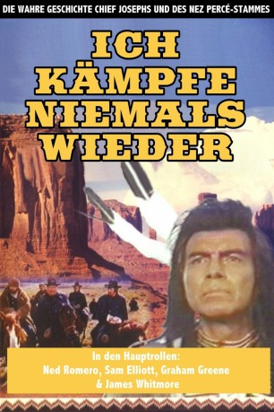

#3121 Ich kämpfe niemals wieder
Alternativ: I Will Fight No More Forever
 
 IMDB-Wertung: 7.5 / 10
IMDB-Wertung: 7.5 / 10  Metascore: 0
Metascore: 0 
Der Film erzählt die auf historischen Ereignissen beruhende Geschichte des Nez-Perce-Indianerstammes, der 1877 aus Oregon floh, weil er sich im Zuge der Landnahme der Weißen nicht in ein Reservat umsiedeln lassen wollte. General Howard (James Whitmore) und Häuptling Joseph (Ned Romero) sind die tragischen Hauptfiguren des Films. Beide lieben den Frieden, beide achten einander, müssen jedoch gegeneinander kämpfen, weil die Regierung in Washington es befiehlt. Howard verfolgt die Indianer von Oregon durch Idaho nach Montana über eine Strecke von 1600 Meilen.
Jahr: 1975
Dauer: 101 Minuten
FSK:
Land: USA Studio: ABCTonspuren:
Untertitel:
Auflösung: SD (934x720) Größe: 3194 MB
Genre: Action, Drama, Krieg, Western, Geschichte
Regisseur: Richard T. Heffron
Drehbuch: Jeb Rosebrook, Theodore Strauss
Soundtrack: Gerald Fried
Darsteller:
 James Whitmore als General Oliver O. Howard
James Whitmore als General Oliver O. Howard Sam Elliott als Captain Wood
Sam Elliott als Captain Wood- Linda Redfearn als Toma
- Emilio Delgado als Ollokot
- Ned Romero als Chief Joseph
- John Kauffman als Wahlitits
- Nick Ramus als Rainbow
- Frank Salsedo als White Bird
- Vince St. Cyr als Chief Looking Glass
- Charles Ynfante als Yellow Wolf
- Conrad Hool als Lieutenant , uncredited
Datei: X:\HD-Western-1960-1979\Ich kämpfe niemals wieder (1975, FSK, 934x720).mkv seit 01.02.2016
Festplatte: HD Eastern+Western
 Es gibt insgesamt 110 Filme in der Gruppe 'HD-Western-1960-1979'
Es gibt insgesamt 110 Filme in der Gruppe 'HD-Western-1960-1979'